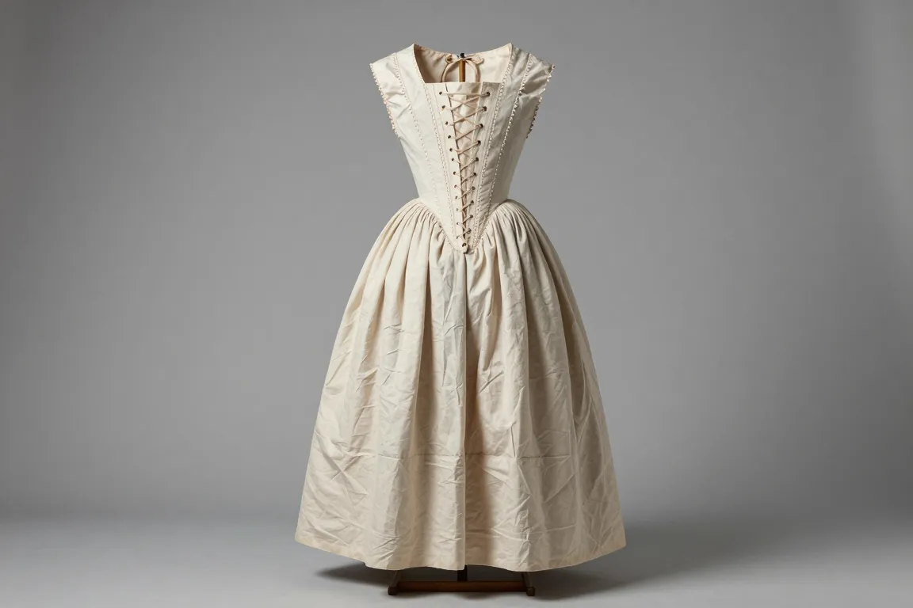

мода · 1700–1790 · также: Корсет на косточках, Пара корсетов, Корсет XVIII века
Жёсткий корсаж долгого XVIII века. Льняная и шёлковая ткань, укреплённая полосами китового уса и зашнурованная на спине. Он прижимал торс в прямой конус под платьем.

Главная идея
Дама стоит прямо, потому что её корсет держит её прямо, а платье сверху показывает конус, который он строит.
Принципы дизайна
Кройте корсет конусом: широким у плеч, узким у талии, с мысом спереди.
Укрепляйте корпус полосами китового уса шириной 3–6 мм, вставленными в прошитые каналы через 1–2 см.
Склеивайте два-три слоя льна пастой, чтобы ткань была жёсткой до того, как вставить косточки.
Ставьте бретели широко и низко на плечо, чтобы плечи отводились назад, а грудь поднималась.
Шнуруйте корсет на спине спиральным шнуром, а вторую шнуровку делайте спереди, если у владелицы нет помощницы.
Покрывайте корсет шёлком, шерстью или кожей и окантовывайте каждый край узкой кожаной полосой.
Носите корсет поверх льняной рубашки и никогда не допускайте его касания кожи.